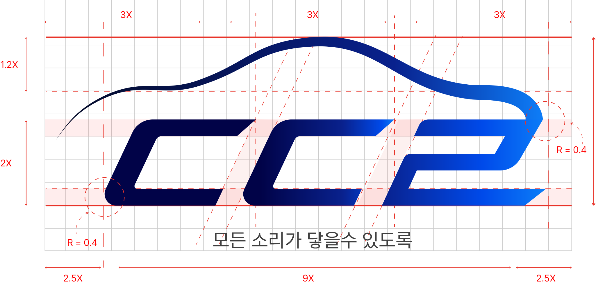
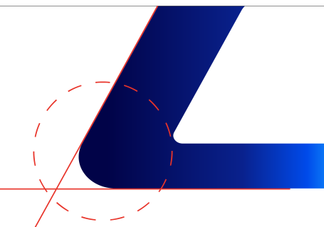
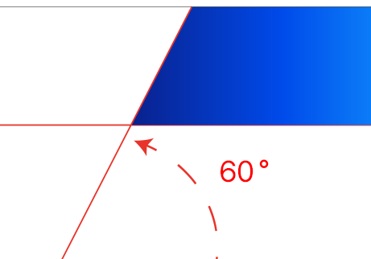

BRAND IDENTITY
모든 소리가
닿을 수 있도록
다들림은 청각장애인을 위한 이동 서비스입니다.
놓치기 쉬운 소리를 눈과 진동으로 바꿔,
이동의 순간마다 안전하게 연결합니다.
CONCEPT
세 가지 의미가
하나의 형태로
자동차 실루엣
자동차의 형태를 최소한의 곡선으로 표현하여 모빌리티 서비스를 직관적으로 전달합니다.
다들림의 초성(ㄷㄷㄹ)을 모티브로 하여 연결된 차량 형태의 움직임을 형상화합니다.
전달의 흐름
좌에서 우로 이어지는 곡선과 그라데이션은 소리가 닿는 확장성과 연결을 표현합니다.
LOGO CONSTRUCTION
정교한 그리드 위에
설계된 비율
X 단위를 기준으로 한 그리드 시스템으로 워드마크와 웨이브의 비례를 정의합니다.


라운드 코너
R = 0.4X
사선 커팅각
60°WAVE CONSTRUCTION
원에서 시작된
소리의 곡선
원호의 결합과 접선 연결로 만들어진 상단 웨이브는
자동차의 지붕선이자 퍼져나가는 소리의 파동이 됩니다.
기본 원형 설정
웨이브의 출발점은 하나의 원입니다. 곡률의 기준이 되는 원을 먼저 세우고, 그 위에 시각적 변형이 일어날 기준점을 잡습니다.
원호 결합
기준 원에서 뽑아낸 원호들을 겹쳐 메인 곡선을 만듭니다. 서로 다른 반지름의 호가 만나면서 소리가 퍼져나가는 듯한 흐름이 생깁니다.
접선 연결
상승부와 하강부가 꺾이지 않도록 접선으로 이어 붙입니다. 끊기는 지점 없이 하나의 선으로 자연스럽게 흐르게 하는 과정입니다.
최종 웨이브
두께의 강약을 정리해 최종 형태를 완성합니다. 얇게 시작해 두껍게 뻗어나가는 흐름이 멀리까지 닿는 소리의 확장을 표현합니다.
COLOR
깊은 밤에서
맑은 신호로
다들림 나이트 네이비에서 시그널 블루로 이어지는 그라데이션은 멀리까지 닿는 소리의 확장을 상징합니다.
APPLICATION
어떤 배경에서도
또렷하게
밝은 배경에는 그라데이션 로고를, 블루·블랙 계열 배경에는 화이트 로고를 사용합니다.
